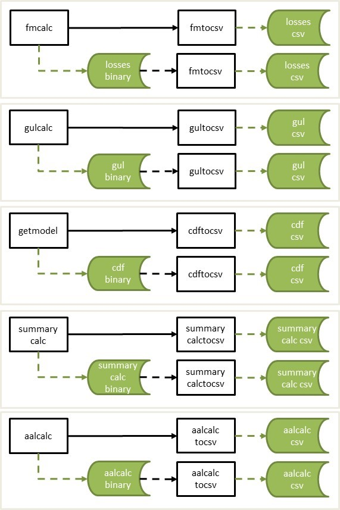
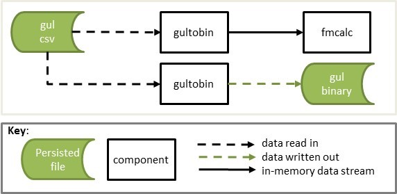

The following components convert the binary output of each calculation component to csv format;
Additionally, the following component is provided to convert csv data into binary format;
Figure 1 shows the workflows for the binary stream to csv conversions.

Figure 2 shows the workflows for the gultobin component.

A component which converts the getmodel output stream, or binary file with the same structure, to a csv file.
| Byte 1 | Bytes 2-4 | Description |
|---|---|---|
| 0 | 1 | cdf |
A binary file of the same format can be piped into cdftocsv.
$ [stdin component] | cdftocsv > [output].csv
$ cdftocsv < [stdin].bin > [output].csv$ eve 1 1 | getmodel | cdftocsv > cdf.csv
$ cdftocsv < getmodel.bin > cdf.csv Csv file with the following fields;
| Name | Type | Bytes | Description | Example |
|---|---|---|---|---|
| event_id | int | 4 | Oasis event_id | 4545 |
| areaperil_id | int | 4 | Oasis areaperil_id | 345456 |
| vulnerability_id | int | 4 | Oasis vulnerability_id | 345 |
| bin_index | int | 4 | Damage bin index | 20 |
| prob_to | float | 4 | The cumulative probability at the upper damage bin threshold | 0.765 |
| bin_mean | float | 4 | The conditional mean of the damage bin | 0.45 |
A component which converts the gulcalc item or coverage stream, or binary file with the same structure, to a csv file.
| Byte 1 | Bytes 2-4 | Description |
|---|---|---|
| 1 | 1 | gulcalc item |
| 1 | 2 | gulcalc coverage |
A binary file of the same format can be piped into gultocsv.
$ [stdin component] | gultocsv > [output].csv
$ gultocsv < [stdin].bin > [output].csv$ eve 1 1 | getmodel | gulcalc -r -S100 -c - | gultocsv > gulcalcc.csv
$ gultocsv < gulcalci.bin > gulcalci.csv Csv file with the following fields;
gulcalc item stream 1/1
| Name | Type | Bytes | Description | Example |
|---|---|---|---|---|
| event_id | int | 4 | Oasis event_id | 4545 |
| item_id | int | 4 | Oasis item_id | 300 |
| sidx | int | 4 | Sample index | 10 |
| loss | float | 4 | The ground up loss value | 5675.675 |
gulcalc coverage stream 1/2
| Name | Type | Bytes | Description | Example |
|---|---|---|---|---|
| event_id | int | 4 | Oasis event_id | 4545 |
| coverage_id | int | 4 | Oasis coverage_id | 150 |
| sidx | int | 4 | Sample index | 10 |
| loss | float | 4 | The ground up loss value | 5675.675 |
A component which converts the fmcalc output stream, or binary file with the same structure, to a csv file.
| Byte 1 | Bytes 2-4 | Description |
|---|---|---|
| 2 | 1 | loss |
A binary file of the same format can be piped into fmtocsv.
$ [stdin component] | fmtocsv > [output].csv
$ fmtocsv < [stdin].bin > [output].csv$ eve 1 1 | getmodel | gulcalc -r -S100 -a1 -i - | fmcalc | fmtocsv > fmcalc.csv
$ fmtocsv < fmcalc.bin > fmcalc.csv Csv file with the following fields;
| Name | Type | Bytes | Description | Example |
|---|---|---|---|---|
| event_id | int | 4 | Oasis event_id | 4545 |
| output_id | int | 4 | Oasis output_id | 5 |
| sidx | int | 4 | Sample index | 10 |
| loss | float | 4 | The insured loss value | 5375.675 |
A component which converts the summarycalc output stream, or binary file with the same structure, to a csv file.
| Byte 1 | Bytes 2-4 | Description |
|---|---|---|
| 3 | 1 | summary |
A binary file of the same format can be piped into summarycalctocsv.
$ [stdin component] | summarycalctocsv > [output].csv
$ summarycalctocsv < [stdin].bin > [output].csv$ eve 1 1 | getmodel | gulcalc -r -S100 -a1 -i - | fmcalc | summarycalc -f -1 - | summarycalctocsv > summarycalc.csv
$ summarycalctocsv < summarycalc.bin > summarycalc.csv Csv file with the following fields;
| Name | Type | Bytes | Description | Example |
|---|---|---|---|---|
| event_id | int | 4 | Oasis event_id | 4545 |
| summary_id | int | 4 | Oasis summary_id | 3 |
| sidx | int | 4 | Sample index | 10 |
| loss | float | 4 | The insured loss value | 5375.675 |
A component which converts gulcalc data in csv format into gulcalc binary item stream (1/1).
| Name | Type | Bytes | Description | Example |
|---|---|---|---|---|
| event_id | int | 4 | Oasis event_id | 4545 |
| item_id | int | 4 | Oasis item_id | 300 |
| sidx | int | 4 | Sample index | 10 |
| loss | float | 4 | The ground up loss value | 5675.675 |
-S, the number of samples must be provided. This can be equal to or greater than maximum sample index value that appears in the csv data. -t, the stream type of either 1 for the deprecated item stream or 2 for the loss stream. This is an optional parameter with default value 2.
$ gultobin [parameters] < [input].csv | [stdin component]
$ gultobin [parameters] < [input].csv > [output].bin$ gultobin -S100 < gulcalci.csv | fmcalc > fmcalc.bin
$ gultobin -S100 < gulcalci.csv > gulcalci.bin
$ gultobin -S100 -t1 < gulcalci.csv > gulcalci.bin
$ gultobin -S100 -t2 < gulcalci.csv > gulcalci.bin| Byte 1 | Bytes 2-4 | Description |
|---|---|---|
| 1 | 1 | gulcalc item |
| 2 | 1 | gulcalc loss |